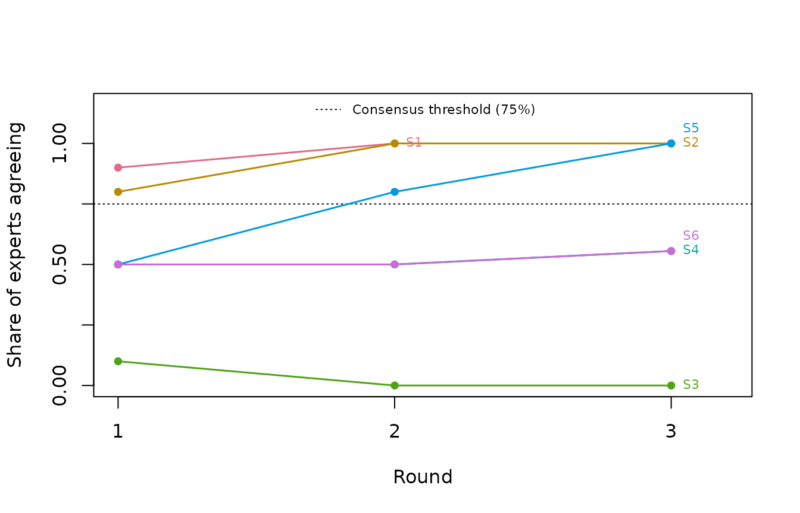
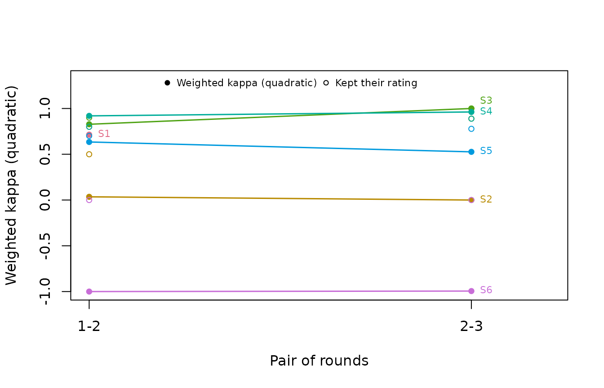

Two questions, not one
In a Delphi study, an expert panel rates the same items over several rounds. Between rounds, experts see anonymous feedback on how the panel rated, and they may revise their own ratings. Two different questions come out of that process:
- Consensus: do enough experts agree about an item now?
- Stability: are experts still changing their ratings?
A panel can agree while still shifting, and it can hold steady
without agreeing. Dajani, Sincoff and Talley (1979) argued that a level
of agreement is only worth interpreting once responses have stopped
changing. delphi_validity() therefore reports the two
questions side by side and never folds one into the other.
Decide three things before the first round
Three choices belong in the study protocol, written down before any data arrive, not in the analysis afterwards.
-
What counts as agreeing. On a 4-point relevance
scale this is usually a rating of 3 or 4. In
delphi_validity()it isagree_cut. -
The consensus threshold. Diamond et al. (2014)
reviewed 100 Delphi studies and recommend defining consensus before the
study begins. The median threshold in the studies they reviewed was 75%.
That figure describes common practice; it is not a validated cut-off.
For this reason
consensus_thresholdhas no default. Without one, results are reported descriptively. - How stability will be measured. The default is weighted kappa (below). Cohen (1968) points out that the weights are part of how agreement is defined, and so they must be chosen before the data are collected.
The data
delphi_validity() takes long-format data: one row per
expert, item, and round. Here, ten experts rate six statements for
relevance on a 1-4 scale over three rounds. Two things happen that are
common in real studies. Expert E10 leaves after round 2, and statement
S1 reaches consensus in round 2 and is set aside, so nobody rates it in
round 3.
round1 <- cbind(
S1 = c(4, 4, 3, 4, 3, 4, 2, 4, 3, 4),
S2 = c(3, 4, 3, 2, 4, 3, 4, 3, 2, 4),
S3 = c(2, 1, 2, 2, 1, 3, 2, 1, 2, 2),
S4 = c(4, 2, 3, 1, 4, 2, 3, 1, 4, 2),
S5 = c(2, 3, 2, 3, 2, 4, 3, 2, 3, 2),
S6 = c(3, 2, 4, 1, 3, 2, 4, 1, 3, 2)
)
round2 <- cbind(
S1 = c(4, 4, 4, 4, 3, 4, 3, 4, 3, 4),
S2 = c(4, 4, 4, 4, 4, 4, 4, 3, 4, 4),
S3 = c(2, 1, 2, 2, 1, 2, 2, 1, 2, 2),
S4 = c(4, 2, 3, 1, 4, 1, 3, 2, 4, 2),
S5 = c(3, 3, 2, 3, 3, 4, 3, 2, 3, 3),
S6 = c(2, 3, 1, 4, 2, 3, 1, 4, 2, 3)
)
round3 <- cbind( # E10 has left; S1 was set aside
S2 = c(4, 4, 4, 4, 4, 4, 4, 4, 4),
S3 = c(2, 1, 2, 2, 1, 2, 2, 1, 2),
S4 = c(4, 1, 3, 1, 4, 1, 3, 2, 4),
S5 = c(3, 3, 3, 3, 3, 4, 3, 3, 3),
S6 = c(3, 2, 4, 1, 3, 2, 4, 1, 3)
)
to_long <- function(m, round) {
data.frame(expert = paste0("E", seq_len(nrow(m))),
item = rep(colnames(m), each = nrow(m)),
round = round, rating = as.vector(m))
}
ratings <- rbind(to_long(round1, 1), to_long(round2, 2), to_long(round3, 3))
head(ratings)
#> expert item round rating
#> 1 E1 S1 1 4
#> 2 E2 S1 1 4
#> 3 E3 S1 1 3
#> 4 E4 S1 1 4
#> 5 E5 S1 1 3
#> 6 E6 S1 1 4If your data are already long, name the columns with
expert_col, item_col, round_col,
and rating_col.
Fitting the workflow
The threshold of 75% was fixed in this example’s protocol before the study. The seed makes the bootstrap intervals reproducible.
fit <- delphi_validity(ratings, lo = 1, hi = 4, consensus_threshold = 0.75,
seed = 2026)
fit
#> contentvalidR Delphi analysis
#> -----------------------------
#> Items: 6 | Experts: 10 | Rounds: 3 (1, 2, 3)
#> Experts per round: 10, 10, 9
#> Agreement: a rating of 3 or higher on the 1-4 scale. Consensus threshold:
#> 75%, fixed before the study.
#> Stability: weighted kappa (quadratic weights) between consecutive rounds
#>
#> 3 item(s) reached consensus in their last round; 3 did not.
#> No consensus: S3, S4, S6
#>
#> Item-level evidence (last round, and the last pair of rounds):
#> item last_round n prop_agree prop_unchanged kappa low high recommendation
#> S1 2 10 1.00 0.80 0.71 0.20 1.0 Consensus
#> S2 3 9 1.00 0.89 0.00 NA NA Consensus
#> S3 3 9 0.00 1.00 1.00 1.00 1.0 No consensus
#> S4 3 9 0.56 0.89 0.96 0.84 1.0 No consensus
#> S5 3 9 1.00 0.78 0.53 0.00 1.0 Consensus
#> S6 3 9 0.56 0.00 -0.99 -1.00 -0.3 No consensus
#>
#> Stability trend (kappa) by pair of rounds:
#> item 1->2 2->3
#> S1 0.71 NA
#> S2 0.04 0.00
#> S3 0.83 1.00
#> S4 0.92 0.96
#> S5 0.63 0.53
#> S6 -1.00 -0.99
#>
#> Share of experts who kept their rating, by pair of rounds:
#> item 1->2 2->3
#> S1 0.8 NA
#> S2 0.5 0.89
#> S3 0.9 1.00
#> S4 0.8 0.89
#> S5 0.7 0.78
#> S6 0.0 0.00
#>
#> Notes:
#> S2 (2->3): Every expert gave the same rating in one of the two rounds, so
#> kappa is 0 however many kept their rating. Read prop_unchanged instead.
#>
#> In some resamples kappa was undefined because every resampled rating fell
#> in one category. Those intervals use the remaining resamples (n_boot_usable
#> in details$stability), so treat them as rough.
#>
#> Stability is weighted kappa between each expert's ratings in consecutive
#> rounds (Holey et al., 2007), with quadratic weights. A change of two scale
#> points counts four times a change of one. With these weights kappa equals
#> the intraclass correlation of the two rounds' ratings, so a shift of the
#> whole panel counts as instability (Fleiss & Cohen, 1973). Read kappa as a
#> trend across rounds, not against a cut-off. No verbal labels such as
#> 'substantial' are shown: kappa falls when ratings converge on one category,
#> which is what a Delphi aims for, so a panel whose experts nearly all kept
#> their answer can still show a low kappa. Holey et al. saw this for their
#> most-agreed statement. Read kappa next to prop_unchanged. The intervals are
#> percentile bootstraps that resample experts. That is this package's
#> extension: Zapf et al. (2016) evaluated resampling items for panel
#> coefficients, not experts for a two-round kappa. With few experts the
#> intervals are wide.
#>
#> The panel changed size across rounds (10, 10, 9 experts). Stability uses
#> only the experts who rated an item in both rounds, and a result from fewer
#> experts is weaker evidence.
#>
#> What these columns mean
#> prop_agree -- Share of experts agreeing. Share of the experts rating an
#> item in a round whose rating was at or above the agreement cut. On a
#> relevance scale this is the I-CVI. Consensus means it reached the
#> threshold set before the study. (0 to 1; higher is broader agreement)
#> prop_unchanged -- Share of experts keeping their rating. Among experts
#> who rated the item in both of two consecutive rounds, the share who
#> gave exactly the same rating again. It is the plainest reading of
#> stability, and it stays meaningful when kappa does not. (0 to 1; 1
#> means no expert changed their rating)
#> kappa_w -- Weighted kappa between rounds. Agreement between each expert's
#> ratings in two consecutive rounds, corrected for chance, with larger
#> changes counting more. Read it as a trend across rounds. It falls
#> when ratings bunch in one category, so a converged panel can show a
#> low kappa even when almost no one changed their rating. (-1 to 1; 1
#> is perfect stability, 0 is no better than chance)
#>
#> What the status labels mean
#> Supported -- The evidence met the criteria set for this analysis.
#> Review -- Something here needs a closer look. This is not an instruction
#> to delete anything.
#> Insufficient data -- Too little usable data to reach a judgment.
#> Descriptive only -- Reported for description only; no decision rule was
#> applied.
#> Each workflow also uses its own wording in the recommendation column
#> (Retain, Strong support, Typical, Covered, and so on). Those words map
#> onto the shared statuses above.
#>
#> See `contentvalid_glossary()` for all terms, or set
#> `options(contentvalidR.show_key = FALSE)` to hide this key.
#>
#> Consensus is not correctness, and 'No consensus' is not an instruction to
#> drop an item. Read these results with the experts' comments.The printout ends with a key to every column and status. The rest of this article turns the key off, to keep the output short:
options(contentvalidR.show_key = FALSE)Reading consensus
prop_agree is the share of experts who rated the item at
or above agree_cut in its last round. On a relevance scale
this is the item’s I-CVI. Three statements (S1, S2, and S5) reached the
75% threshold. S1’s last round is round 2, because it was set aside once
it reached consensus.
Look at S3. Nobody rated it relevant, which looks like “no consensus”. But the panel does agree: every expert rated it below the cut. The interpretation says so. Whether agreement in that direction counts as consensus to exclude an item is for your protocol to define, not for the software to decide.
shown <- fit$results[fit$results$item %in% c("S3", "S4"), ]
writeLines(strwrap(paste0(shown$item, ": ", shown$interpretation),
width = 72, exdent = 4))
#> S3: No consensus in the last round: 0% agreed, against a threshold of
#> 75%. The panel did agree in the other direction: 100% rated it
#> below the agreement cut. Whether that is consensus to exclude is
#> for your protocol to say.
#> S4: No consensus in the last round: 56% agreed, against a threshold of
#> 75%. Consider another round, rewording, or reporting the item as
#> without consensus.Reading stability
Read prop_unchanged first. It is the plainest measure:
the share of experts who gave exactly the same rating again. Then read
the kappa trend beside it. Kappa is weighted kappa between each expert’s
ratings in two consecutive rounds (Holey et al., 2007). With the default
quadratic weights, it equals the intraclass correlation of the two
rounds’ ratings (Fleiss & Cohen, 1973). A shift of the whole panel
after feedback therefore counts as instability.
The six statements show the main patterns:
- S3 and S4 are stable. Almost every expert kept their rating, and kappa is high: between 0.83 and 1 in every pair of rounds. But S4 is stable without consensus: the panel is split (56% agreeing) and staying split. Another round is unlikely to change that. Dajani et al. (1979) treat a stable split as a result in its own right, to be reworded or reported rather than iterated away.
-
S2 converged to unanimity. In round 3 every expert
rated it 4. Of the experts who rated it in both rounds, 89% kept their
rating, yet kappa is 0. When every rating in a round is the same, there
is no room left above chance, so kappa is 0 no matter how many experts
held steady. The output flags this and points you to
prop_unchanged. - S5 formed consensus while kappa fell, from 0.63 to 0.53. As ratings bunch near 3, kappa has less room to show agreement. This is the same pattern Holey et al. (2007) reported: their most-agreed statement had their lowest kappa. With nine or ten experts, the intervals run from about 0 to 1.
- S6 is unstable. No expert kept their rating, and kappa is negative because experts swapped positions.
These patterns are why the output gives kappa no verbal labels such
as “moderate” or “substantial”. Landis and Koch (1977), who introduced
those labels, called their divisions clearly arbitrary. And a label
would tend to get worse as a Delphi succeeds, because
convergence lowers kappa. Read kappa as a trend, next to
prop_unchanged.
The full table, with every pair of rounds, is in
details$stability:
st <- fit$details$stability
cols <- c("prop_unchanged", "value", "lower", "upper")
st[cols] <- round(st[cols], 2)
st[c("item", "from_round", "to_round", "n_paired", cols)]
#> item from_round to_round n_paired prop_unchanged value lower upper
#> 1 S1 1 2 10 0.80 0.71 0.20 1.00
#> 2 S2 1 2 10 0.50 0.04 -0.04 0.40
#> 3 S2 2 3 9 0.89 0.00 NA NA
#> 4 S3 1 2 10 0.90 0.83 0.44 1.00
#> 5 S3 2 3 9 1.00 1.00 1.00 1.00
#> 6 S4 1 2 10 0.80 0.92 0.73 1.00
#> 7 S4 2 3 9 0.89 0.96 0.84 1.00
#> 8 S5 1 2 10 0.70 0.63 0.00 1.00
#> 9 S5 2 3 9 0.78 0.53 0.00 1.00
#> 10 S6 1 2 10 0.00 -1.00 -1.00 -0.36
#> 11 S6 2 3 9 0.00 -0.99 -1.00 -0.30n_paired counts the experts who rated the item in both
rounds. It drops to 9 in the second pair because E10 left.
Seeing the trends
Both questions are trends across rounds, which a plot reads better than a table of round pairs:
plot(fit)
S1’s line stops at round 2, because that is where it settled and was set aside. The dotted line is the threshold you fixed in advance; with no threshold set, no line is drawn, because the analysis applies none.
plot(fit, which = "stability")
Filled points are kappa, open circles the share of experts who kept their rating. S6 sits at the bottom on both, and S2’s kappa of 0 sits well below its share unchanged, which is the unanimous-round case described above. There are no shaded “good” and “poor” bands behind kappa, for the same reason there are no verbal labels.
Why the default looks at individual experts
S6 is the reason stability is measured expert by expert. Under Scheibe, Skutsch and Schofer’s (1975) 15% rule, which compares the two rounds’ overall rating distributions, S6 looks perfectly stable:
pc <- delphi_validity(ratings, lo = 1, hi = 4, consensus_threshold = 0.75,
stability = "percent_change")
s6 <- pc$details$stability[pc$details$stability$item == "S6", ]
s6$value <- round(s6$value, 2)
s6[c("item", "from_round", "to_round", "prop_unchanged", "value", "stable")]
#> item from_round to_round prop_unchanged value stable
#> 10 S6 1 2 0 0.00 TRUE
#> 11 S6 2 3 0 0.11 TRUEThe distribution barely moved: the net change is 0% and then 11%. Yet
no expert kept their rating. Experts traded places, so the totals stayed
the same. Chaffin and Talley (1980) made exactly this point against
group-level stability tests. Every published method remains available
through stability, and each one prints its own limits:
stability |
What it measures | Reads as stable when | Main limitation |
|---|---|---|---|
"kappa" (default) |
Each expert’s agreement with their own earlier rating, corrected for chance | Read as a trend; no cut-off | Falls as ratings converge |
"lambda" |
How well an earlier rating predicts the later one | Read as a trend | Predictability, not agreement; undefined if the later round is unanimous |
"chisq_individual" |
Whether later ratings depend on earlier ones | p < alpha | Association, not agreement; needs expected counts of 5 or more |
"chisq_group" |
Whether the two rounds’ distributions differ | p >= alpha | Small panels look stable by default; misses experts swapping answers |
"percent_change" |
Net movement of the distribution | Change below 15% | No statistical basis; misses swapping; coarse with small panels |
The two chi-square tests read in opposite directions: one counts a significant result as stable, the other a non-significant one. The printout always says which is which.
Relevance evidence round by round
Each round is also analyzed with expert_validity(), so
the usual relevance evidence (I-CVI, Aiken’s V, and their intervals) is
available round by round. compare_rounds() reads those fits
directly:
do.call(compare_rounds, unname(fit$details$round_fits))
#> Comparison across pretest rounds
#> Workflow: expert-panel Rounds: 3 Units compared: 6
#>
#> Status by round
#> item Round 1 Round 2 Round 3 change
#> S1 Supported Supported <NA> Removed
#> S2 Supported Supported Supported Unchanged
#> S3 Review Review Review Unchanged
#> S4 Review Review Review Unchanged
#> S5 Review Supported Supported Strengthened
#> S6 Review Review Review Unchanged
#>
#> Round-to-round summary
#> from to n_compared n_unchanged n_strengthened n_weakened n_added
#> Round 1 Round 2 6 5 1 0 0
#> Round 2 Round 3 5 5 0 0 0
#> n_removed settings_changed
#> 0 FALSE
#> 1 FALSE
#> Settings were identical across rounds, so these transitions can be read as
#> changes in evidence.
#> A status change means the evidence crossed a criterion, not that an item
#> improved by a measurable amount. An item sitting near a boundary can move
#> on a very small change. Read transitions alongside each round's index
#> values.S1 shows as Removed in round 3 because it was set aside
after reaching consensus. S5 strengthened once experts converged.
Reporting
content_report() gives a compact table for a
manuscript:
content_report(fit)
#> item last_round n_experts prop_agree prop_unchanged stability stability_low
#> 1 S1 2 10 1.00 0.80 0.71 0.20
#> 2 S2 3 9 1.00 0.89 0.00 NA
#> 3 S3 3 9 0.00 1.00 1.00 1.00
#> 4 S4 3 9 0.56 0.89 0.96 0.84
#> 5 S5 3 9 1.00 0.78 0.53 0.00
#> 6 S6 3 9 0.56 0.00 -0.99 -1.00
#> stability_high recommendation status
#> 1 1.0 Consensus Supported
#> 2 NA Consensus Supported
#> 3 1.0 No consensus Review
#> 4 1.0 No consensus Review
#> 5 1.0 Consensus Supported
#> 6 -0.3 No consensus ReviewDiamond et al. (2014) recommend that a Delphi report state the definition of consensus and its threshold (decided before the study), the criteria for stopping, and the criteria for dropping items. Also report:
- the number of rounds and experts in each round;
- the stability statistic, and the weights if it is kappa;
- the number of bootstrap resamples and the seed.
Carrying a Delphi forward
When the panel is finished, content_handoff() packages
the items that survived, with the evidence behind each decision, for the
empirical stage:
handoff <- content_handoff(fit, keep = "Supported")
handoff$item_evidence[c("item", "carried", "status", "n_judges", "round")]
#> item carried status n_judges round
#> 1 S1 TRUE Supported 10 2
#> 2 S2 TRUE Supported 9 3
#> 3 S3 FALSE Review 9 3
#> 4 S4 FALSE Review 9 3
#> 5 S5 TRUE Supported 9 3
#> 6 S6 FALSE Review 9 3round is the round each item settled in, so S1 carries
round 2: it reached consensus there and was set aside. Every other
workflow writes one constant into that column, because one fit is one
round.
Each item’s relevance evidence comes from its own last round, with intervals, and the stability evidence travels beside it:
st <- handoff$item_statistics
unique(st$statistic)
#> [1] "I-CVI" "Aiken's V"
#> [3] "modified kappa" "proportion unchanged"
#> [5] "weighted kappa (quadratic)"Stability is carried as evidence, not as a reason to keep or drop an
item, just as it does not set an item’s status above. See
vignette("handoff-to-empirical-validation") for what the
object holds and how a downstream package reads it.
What this analysis does not establish
Consensus is agreement among these experts. It is not, by itself,
evidence that an item is valid. Feedback between rounds can also press
experts toward agreement they do not hold: Scheibe, Skutsch and Schofer
(1975) observed that participants who conformed most strongly were the
least satisfied with the process. A No consensus result is
not an instruction to drop an item, and Consensus is not an
instruction to keep one. Read these results together with the experts’
comments, the construct definition, and the rest of the content-validity
evidence.
References
Chaffin, W. W., & Talley, W. K. (1980). Individual stability in Delphi studies. Technological Forecasting and Social Change, 16(1), 67-73. https://doi.org/10.1016/0040-1625(80)90074-8
Cohen, J. (1968). Weighted kappa: Nominal scale agreement provision for scaled disagreement or partial credit. Psychological Bulletin, 70(4), 213-220. https://doi.org/10.1037/h0026256
Dajani, J. S., Sincoff, M. Z., & Talley, W. K. (1979). Stability and agreement criteria for the termination of Delphi studies. Technological Forecasting and Social Change, 13(1), 83-90. https://doi.org/10.1016/0040-1625(79)90007-6
Diamond, I. R., Grant, R. C., Feldman, B. M., Pencharz, P. B., Ling, S. C., Moore, A. M., & Wales, P. W. (2014). Defining consensus: A systematic review recommends methodologic criteria for reporting of Delphi studies. Journal of Clinical Epidemiology, 67(4), 401-409. https://doi.org/10.1016/j.jclinepi.2013.12.002
Fleiss, J. L., & Cohen, J. (1973). The equivalence of weighted kappa and the intraclass correlation coefficient as measures of reliability. Educational and Psychological Measurement, 33(3), 613-619. https://doi.org/10.1177/001316447303300309
Holey, E. A., Feeley, J. L., Dixon, J., & Whittaker, V. J. (2007). An exploration of the use of simple statistics to measure consensus and stability in Delphi studies. BMC Medical Research Methodology, 7, 52. https://doi.org/10.1186/1471-2288-7-52
Landis, J. R., & Koch, G. G. (1977). The measurement of observer agreement for categorical data. Biometrics, 33(1), 159-174. https://doi.org/10.2307/2529310
Scheibe, M., Skutsch, M., & Schofer, J. (1975). Experiments in Delphi methodology. In H. A. Linstone & M. Turoff (Eds.), The Delphi method: Techniques and applications. Addison-Wesley.